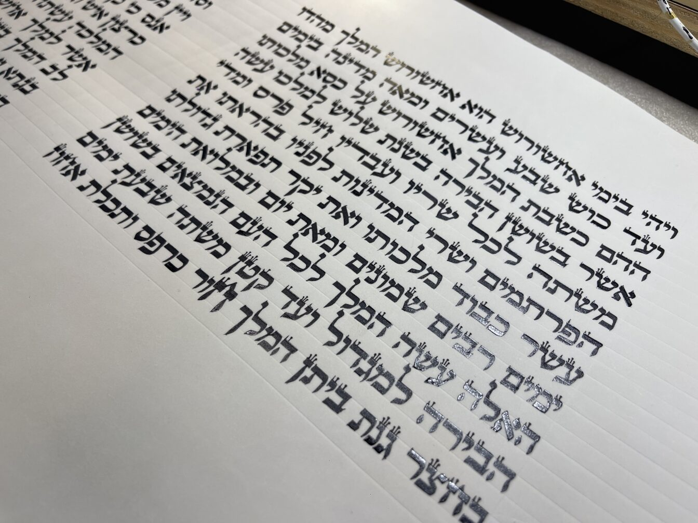

המגילת הרב עובדיה ומגילת הרב חיים קנייבסקי
המגילת הרב עובדיה ומגילת הרב חיים קנייבסקי
רוצה לקבל תכנים בתורת הסת"ם ישירות למייל?
שלח הודעה עכשיו לכתובת Y0548431060@GMAIL.COM
הלכה ידועה היא שבספר תורה צריכים לעשות גליונות, דהיינו שוליים מעבר למקום הכתיבה (ש״ע יו״ד סי׳ רעג ס״א): שלוש אצבעות למעלה, ארבע למטה, ושתי אצבעות בין העמודים. בספרי נביאים השיעור קטן יותר: שתי אצבעות למעלה, שלוש למטה ואצבע בין העמודים, ואם רצה להוסיף מוסיף, ובלבד שלא יהיו זה וזה מרובים מן הכתב (מסכת סופרים).
‘מגילת ר׳ חיים קנייבסקי’
בפירושו למסכת ספר תורה (פ״ב ה״ד) כתב מרן שר התורה רבי חיים קנייבסקי זצ״ל, שהמדקדקים הרוצים לצאת ידי דעת ‘הגאון’ שלא לכתוב עשרת בני המן באותיות רבתי, ובו בזמן לקיים את הסוברים ש‘איש’ יהיה בראש הדף ו‘עשרת’ בסופו, כותבים מגילה בת י״א שורות בלבד, וכך נהג החזון איש.
עוד הוסיף כי יש ראשונים הסוברים ששיעור הגליונות במגילה הוא כשיעור ספר תורה – שבע אצבעות. לדעת מרן החזון איש שיעור זה הוא כ־17.5 ס״מ, וממילא גובה השורה הכתובה כ־1.8 ס״מ, כך שיהיה הכתב מרובה על החלק.
וסיים: ‘וכן עשינו אצלנו בבית הכנסת’.
לסיכום: מגילה בת י״א שורות, גובה שורה 1.8 ס״מ וגליונות 17.5 ס"מ,, מכונה בפי הסופרים ‘מגילת ר׳ חיים’.
‘מגילת הרב עובדיה’
מרן פאר הדור רבי עובדיה יוסף זצ״ל, כתב בחזון עובדיה (פורים עמ׳ רנו) שיש שמגילה בת י״א שורות הוא הידור כדי שלא יהיו אותיות של בני המן רבתי כאמור, ואת ההלכה שיהיה במגילה שיעור גליונות כס"ת, והביא שם את דברי המסכת סופרים שלא יהיה הכתב מרובה על החלק.
בפועל, במשך שנים קרא הגרע"י זצ"ל במגילה בת כ״א שורות.
מספר שנים לפני פטירתו קיבל מסופר חשוב במתנה מגילה בת י״א שורות, כשגובה השורה 1.4 ס״מ בלבד, עם גליונות 14 ס"מ כאשר הכתב מרובה על החלק.
במגילה זו קרא עד סוף ימיו, ומאז התקבע שמה כ‘מגילת הרב עובדיה’.
ההבדל ביניהן ברור: ההבדל בין‘מגילת ר׳ חיים’ל'מגילת הרב עובדיה, היא שבשל ר' חיים שיעור הגליונות כדעת החזו"א, ובמגילת הרב עובדיה גליונות שיעור ר׳ חיים נאה.
מהם שיעורי הגליונות במגילות המצויות
בקלף המצוי כיום בחנויות, במגילות י״א או כ״א שורות, השוליים אינם כשיעור ספר תורה ואף לא כשיעור נביאים.
ואף שלכתחילה ראוי לנהוג כשיעור ספר תורה (דעת רבינו תם), ויש שדנו להקל כדין נביאים (קסת הסופר, שבט הלוי).
אמנם בקול יעקב [סי' תרצא אות ז] כתב שלא הקפידו במקומו על שיעור גליונות כיון שאינו מעכב בספר תורה.
וכדברי הערוך השלחן (סי' רעג אות ב) שדין הגליונות אינו לעיכובא וטעם השיעורים הללו מפני נוי הס"ת, וז"ל: ולכן בספרי תורה הקטנים שלנו שאי אפשר לעשות השיעור הזה עושים גליונות קטנים רק הכל בערך הזה למטה יותר מלמעלה, עכ"ל. והוא הדין במגילות שלנו, וכן מנהג העולם שלא מקפידים בזה.
שנזכה לעשות נחת רוח להשם יתברך.
בברכה
יוחאי אוחיון
מלמד סופרים
